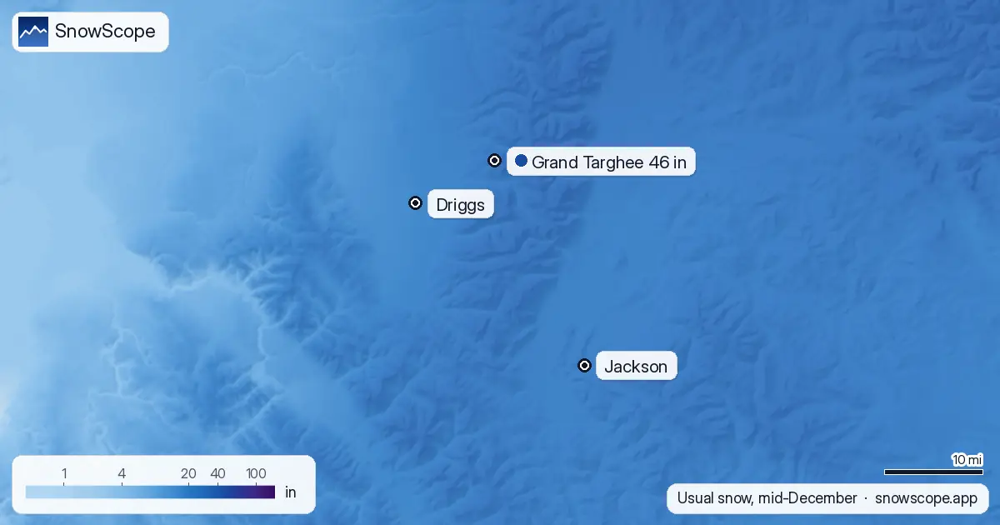

Grand Targhee en décembre : une neige quasi certaine, si vous choisissez la bonne date
L'altitude de mi-montagne de Grand Targhee garantit une neige profonde presque chaque hiver en décembre : 118 cm le 15 décembre en année typique, avec chaque hiver des 46 dernières années atteignant au moins 50 cm. La véritable décision pour votre budget n'est pas de savoir si la neige sera là, mais quelle semaine vous réserverez.
Consultez les prévisions neige en temps réel pour Grand Targhee Resort sur l'application SnowScopeHauteurs de neige, alertes poudreuse et carte 3D, gratuitement.
Quelle épaisseur et quand
À mi-montagne, autour de 2 658 m, attendez-vous à 81 cm le 1er décembre, puis 118 cm à la mi-décembre, et 131 cm à Noël. Le sommet, près de 3 000 m, atteint 179 cm à la mi-décembre. Même en année pauvre (un hiver sur dix), la mi-montagne conserve 79 cm le 15.
Début décembre est un pari solide : 54 % des hivers offrent une bonne neige la première semaine. Dès la deuxième semaine, ce pourcentage grimpe à 76 %, et les troisième et quatrième semaines atteignent 89 % et 93 %. La neige durable arrive généralement début octobre, so la base est épaisse à votre arrivée.

Timing du prix des forfaits
Les forfaits journée en ligne coûtent entre 125 et 180 dollars selon la date ; à la caisse, ajoutez 10 dollars de plus. L'essentiel est que les dates de début décembre, avant les vacances, se situent à la basse du tarif. La station ouvre le 20 novembre et applique les tarifs des vacances du 24 décembre au 3 janvier, période la plus chère.
Il reste presque quatre semaines en décembre, début et mi-mois, à meilleur tarif. Les forfaits multijours deviennent moins chers par jour à mesure que vous en achetez plus, so un séjour de trois ou quatre jours répartit mieux le coût. Les calculs favorisent une réservation en ligne en début décembre si votre emploi du temps le permet.

Comparaison avec le secteur
Snow King, la remontée de la ville de Jackson, commence à 100 dollars par jour mais n'offre en moyenne que 71 cm à mi-montagne le 15 décembre, avec une bonne neige dans seulement 87 % des hivers. Entrée moins chère, base plus fine.
Jackson Hole Mountain Resort, le plus grand domaine de la vallée, en moyenne 93 cm à mi-montagne à la même date. C'est 23 cm de moins que Targhee à la même altitude. Sur la neige de décembre, Targhee surpasse les deux.
Où loger
Targhee domine Driggs du côté Idaho des Tetons. La plupart des visiteurs s'installent à Driggs (plus proche et tranquille) ou Jackson (plus de choix, mais de l'autre côté du Teton Pass). Le col est raide et ferme en tempête, vérifiez donc les conditions avant de partir.
Nous n'avons pas comparé les coûts d'hébergement, mais le côté Idaho tend à offrir moins d'options mais plus abordables. Jackson offre plus de variété à tous les prix.
La neige est-elle aussi fiable qu'avant
Essentiellement oui, mais avec un léger déclin. Entre 1980-81 et 1994-95, la mi-montagne en moyenne 130 cm le 15 décembre. Les 15 derniers hivers, ce chiffre est tombé à 102 cm. Pourtant, tous les hivers des deux périodes restent au-dessus de 50 cm.
La saison dernière a été maigre, arrivant avec seulement 62 cm à mi-décembre à mi-montagne. C'est suffisant pour skier les pistes damées, mais notablement plus fin que les 118 cm typiques. Début décembre cette saison n'atteint que 5 cm pour l'instant, so la montagne se remplira au fil du mois.
Quoi apporter
Décembre à Targhee est froid et en altitude. Le sommet de la montagne est à 3 000 m et reçoit de la neige régulièrement. Apportez des sous-vêtements thermiques, une veste imperméable et des lunettes pour le vent. Les pentes supérieures restent skiables bien au-delà du printemps du fait de l'altitude et de l'accumulation totale.
Début décembre peut voir des cycles gel-dégel sur les pistes orientées au sud à mi-montagne si le soleil est fort. Skiez plus haut ou face au nord si vous voulez une neige régulière. À la mi-décembre, le froid soutenu verrouille la base.
Conseils aux skieurs
- Réservez vos dates de début décembre en ligne au moins deux semaines à l'avance pour bloquer le prix réduit ; les ventes à la caisse coûtent 10 dollars de plus et ont moins de certitude sur la disponibilité.
- Si vous prévoyez deux jours ou plus, achetez un forfait multijour ou un abonnement : le coût par jour chute sensiblement comparé aux forfaits journée.
- Skiez à mi-montagne ou plus haut en début décembre quand la base est fine ; les 150 m supplémentaires d'altitude font une différence de 38–50 cm dans l'épaisseur et la stabilité de la neige.
- Avant de partir de Jackson, vérifiez l'état du Teton Pass : il ferme en cas de neige abondante et de tempêtes. Le côté Idaho est plus raide que vous ne l'imaginez peut-être.
- Lisez le bulletin d'avalanche du Bridger-Teton Avalanche Center avant de skier hors-piste, surtout sur les pentes raides orientées au nord où des plaques peuvent se former après des chutes de neige fraîche.
À propos de ces chiffres
Les hauteurs de neige des stations sont la neige la plus épaisse sur le haut du domaine à la date indiquée ; ce sont des estimations pour une zone, pas une mesure en un point. Les prévisions peuvent changer. Consultez toujours le bulletin d'avalanche officiel avant le hors-piste.
Bulletins d'avalanche officiels: Bridger-Teton Avalanche Center
Citer ce bulletin
Pour la recherche, l'enseignement ou la presse : chiffres et graphiques réutilisables librement sous CC BY 4.0 avec cette citation.
SnowScope (2026), Grand Targhee en décembre : une neige quasi certaine, si vous choisissez la bonne date, https://snowscope.app/blog/fr/2026/11/grand-targhee-december-snow-and-ticket-prices.html, consulté le 2026-11-14
SnowScope (Atlas Labs). (2026, November 14). Grand Targhee en décembre : une neige quasi certaine, si vous choisissez la bonne date. SnowScope snow reports. https://snowscope.app/blog/fr/2026/11/grand-targhee-december-snow-and-ticket-prices.html
BibTeX
@misc{snowscope2026grandtargheedecembersnow,
author = {{SnowScope (Atlas Labs)}},
title = {Grand Targhee en décembre : une neige quasi certaine, si vous choisissez la bonne date},
year = {2026},
month = nov,
howpublished = {\url{https://snowscope.app/blog/fr/2026/11/grand-targhee-december-snow-and-ticket-prices.html}},
note = {Published 2026-11-14 13:57 UTC; accessed 2026-11-14}
}· CC BY 4.0 · Méthodes, données et outils →
Suivre Grand Targhee Resort
Gratuit : un message quand la neige arrive, et la météo chaque matin.